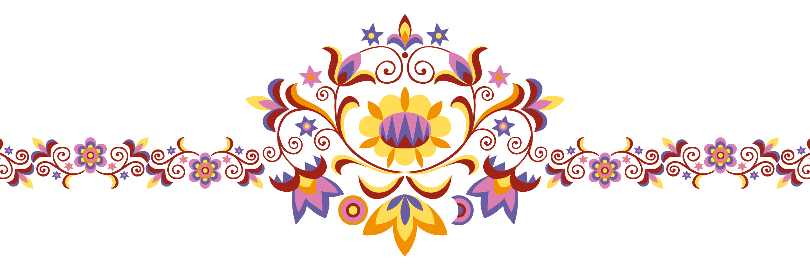

Fő jellemzői
A magyar nótában igen gyakori a szekvencia, kivéve a kvinttel feljebb vagy lejjebb való ismétlést. A hangzatfelbontás, mint dallamalkotó eszköz kötelező.
Az a mondás járja, hogy a magyar nótának még inkább, mint a népdalnak, a kotta a halála. Igazán csak stílusa szerinti előadásban tud hatni és érvényesülni. Megőrzésében és terjesztésében a cigányzenészeknek van jelentős szerepük. Egy-egy sikerültebb magyar nótát már a kottában való megjelenésük előtt divatba hoztak a cigányzenekarok. A nóták kezdettől fogva főleg zongorakísérettel jelentek meg, amelyeket azután innen alkalmaztak cigányzenekari együttesekre. Egy időben a nótakiadványok címlapján a szerző neve és a mű címe mellett azt is feltüntették, hogy kik játsszák, például "játssza Sárközi".
Fontos követelmény, hogy a magyar nóta dallamának könnyen harmonizálhatónak kellett lennie, sőt kívánnia kell a harmóniát. Ez a követelmény a nóta eredeti közönségének ízlésében keresendő. A könnyen harmonizálhatóság a magyar nóta máig egyik legfontosabb megkülönböztető jegye a hasonló sorszerkezetű magyar népdaloktól. A verbunkos zene nagyjából már meghonosította azokat a Nyugat-európai elemeket, amelyek megkülönböztetik a magyar nóta zenei anyagát a népdaltól. Az európai műzenéből átvett dallamfordulatokról elmondható, (mi-fa-so kezdet, la-so-ti-do vagy fa-mi-si-la záróformula, stb.) hogy nehezen énekelhetőek, mert nem csupán dallami, hanem harmóniai gondolkodásban gyökereznek hangközei (kromatika, bővített kvart, szűkített kvint, stb.).
